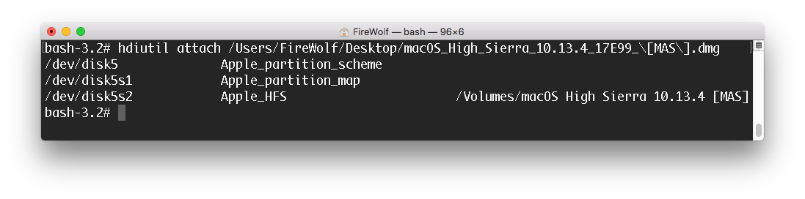
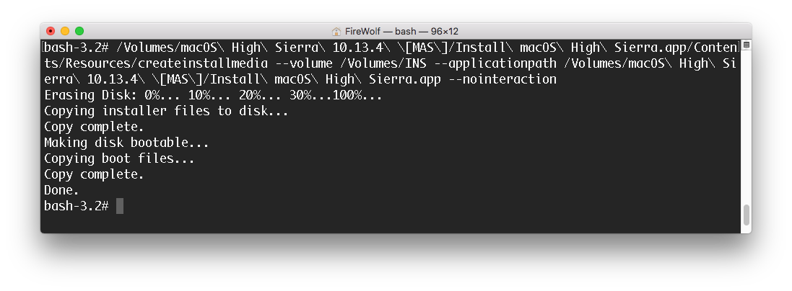

创建原版 macOS 安装盘
由于当前 FireWolf OS X PE 9 并不内置相关维护套件以提供创建安装盘的图形界面，本小节将详细介绍如何在 PE 环境下创建 macOS 的原版安装盘。
本文将使用 macOS 系统安装 APP 内置的命令行工具制作安装盘，制作好的安装盘仅支持安装到采用 GUID 分区表（GPT 分区）的硬盘上。
请认真阅读下面的『准备工作』部分。
准备工作
在创建安装盘之前，请准备好一个不小于 8GB 的分区（U盘，硬盘、移动硬盘均可）。
该分区作为 macOS 安装盘将会被格式化，请务必备份好数据。
其次请准备好从 Mac App Store （以下简称 MAS）上下载好的原版系统的安装 APP。
从 MAS 下载下来的原版 APP 的文件名一般为 Install 开头后接系统完整的名称。
比如说，macOS High Sierra 的原版 APP 名字为：Install macOS High Sierra.app 。
在中文系统下可能显示为：安装 macOS High Sierra.app。（本文将使用 macOS 10.13.4 的原版 APP 作为示例）
其他渠道
如果你从其他渠道下载了原版安装镜像（一般都会用磁盘镜像 DMG 来打包），请先使用内置的『火箭启动器』挂载镜像。
如果『火箭启动器』无法挂载你的镜像的话，并且你很确定镜像没有损坏的话，你可以通过下列两种方法来尝试手动挂载镜像：
方法一：
- 打开 FireWolf MultiApp Launcher 的『应用管理』
- 导入位于
/System/Library/CoreServices/文件夹下的DiskImageMounter.app - 双击主界面的『火箭』图标切换到『手动模式』
- 重新将镜像拖入到『火箭启动器』中，并在应用列表中选择第二步导入的 DiskImageMounter 来挂载镜像
如果你不知道该如何导入应用程序或如何切换火箭启动器的运行模式，请参考第三章的第4、5小节。
方法二：
- 通过 FireWolf MultiApp Launcher 来打开终端
- 输入
hdiutil attach后跟镜像的完整路径（你可以在敲完 attach 后直接把镜像拖到终端里）
开始创建安装盘
- 通过 FireWolf MultiApp Launcher 来打开终端
- 而后打开 Path Finder 定位到你的原版 APP 的位置
- 将位于原版 APP 的
/Contents/Resources/文件夹下的createinstallmedia拖入到终端中 - 而后敲入
--volume后跟你的安装分区的完整路径（同样地，你可以直接把目标分区直接拖入到终端中） - 接着敲入
--applicationpath后跟你的原版 APP 的完整路径（可直接把原版 APP 拖入到终端中） - 最后输入
--nointeraction后按下回车，就开始格式化分区制作安装盘了 - 等待终端出现 Done 的提示即可